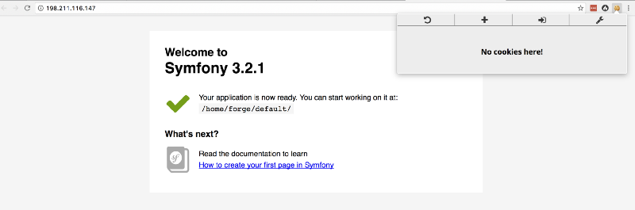
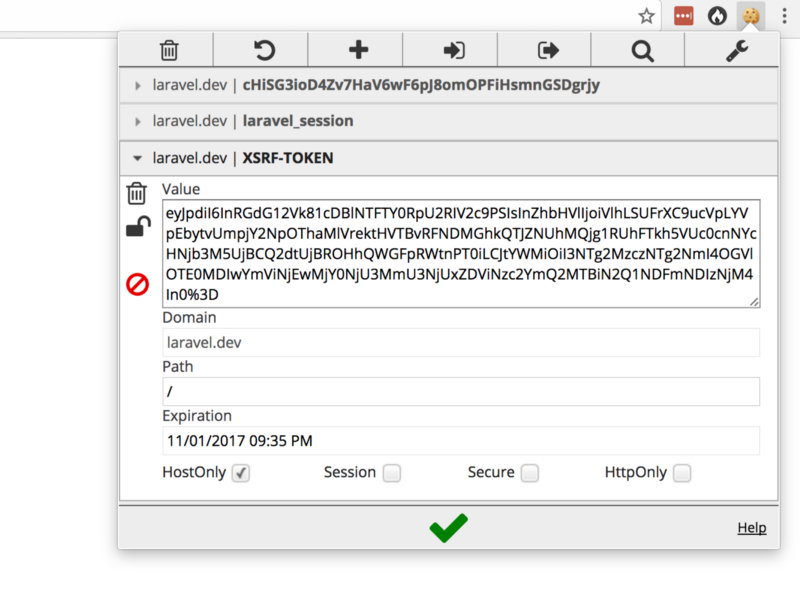

网上充斥着各式各样的 PHP 框架性能对比的文章。然而，他们总是把“苹果”和“橘子”做对比（看上去有点儿像，都是圆的，但其实不是一码事）。这次，我将着重对 Laravel、Symfony 和 Zend 这三个框架做性能对比，并且还要说明为什么这三个框架总是被错误的进行比较。 我给的对比结果你不必全信。读完这篇文章之后，你可以自己搞一个 2GB 的 DigitalOcean 的服务器亲自去检验一下，也就 5 分钟而已。 开始之前，我希望你知道：所有这些框架都足够快，都可以满足你构建任何应用。写这篇文章之前我也犹豫过，我认为做这种层次的对比其实真的挺傻的。我唯一的目的是展示如何在三个框架之间进行公平的比较。 问题的源头 当你在一台全新的 DigitalOcean 服务器上配置 Symfony 或 Zend 项目时，你会发现返回的 http 响应是没有 session 信息的。注意，看下图，cookie 并没有被返回：

然而，Laravel 默认是开启 session 的（另外还有一些中间件）。这样能让基于 Laravel 构建的应用很方便地利用 session 机制将用户状态持久化保存。为了 Laravel 框架的用户更方便而默认开启 session 反倒让 Laravel 在性能对比中很受伤。
另一个常见错误是：要么没有倒出一份优化过的 Composer autoloader ；要么没有用
php artisan config:cache 指令缓存 Laravel 配置信息 -- 这份缓存能够大幅度减少 Laravel 的启动（bootstrap）时间。
设置环境
设置环境 首先，我通过 Laravel Forge 在 DiginalOcean 上创建了一个 2GB 内存的服务器，安装的是 PHP 7.1 版本。然后安装 Symfony ，优化 Composer autoloader ，配置 Nginx 通过生产环境下的前端控制器（app.php）运行。并且我还按照 Symfony 生产环境调优指南一步步设置到位。对于 Zend 的配置也类似。 接下来，针对 PHP 7.1 的 opcache 设置如下（生产环境）： opcache.enable=1 opcache.memory_consumption=512 opcache.interned_strings_buffer=64 opcache.max_accelerated_files=20000 opcache.validate_timestamps=0 opcache.save_comments=1 opcache.fast_shutdown=1
安装 Laravel 时，执行,config:cache Artisan 指令，并且在 app/Http/Kernel.php 文件中将 web 中间件组注释掉（这些中间件的作用就是让 Laravel 支持 session）。做完上述修改之后就可以让三个框架都在无 session 支持的状态下进行对比了。.
对比结果
After configuring the projects, I ran a simple test using Apache benchmark, which anyone can recreate:
三个框架都能正常运行后，终于可以祭出 Apache benchmark 来做简单的测试了。其实任何人都可以很容易地复现这一测试：
ab -t 10 -c 10 [http://server.address/]
下面是测试结果
无Session:
- Laravel:609.03 次请求／秒 (平均值)
- Zend: 559.91 次请求／秒 (平均值)
- Symfony532.97 次请求／秒 (平均值)
有 Session:
- Laravel:609.03 次请求／秒 (平均值)
- Zend: 559.91 次请求／秒 (平均值)
- Symfony532.97 次请求／秒 (平均值)